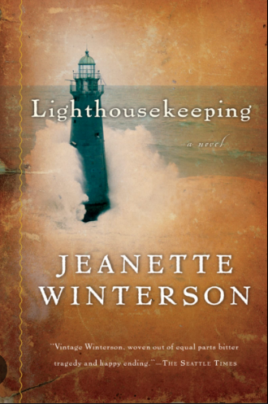

Reading
Francis has always loved to read. Their mother is a librarian! Their favorite book is Annihilation by Jeff Vandermeer or Lighthousekeeping by Jeanette Winterson.
Francis also likes to read high fantasy epics. After they finish their current reads they are going to read Wind and Truth by Brandon Sanderson which has 1344 pages.
You can see what Francis is reading on their goodreads.
